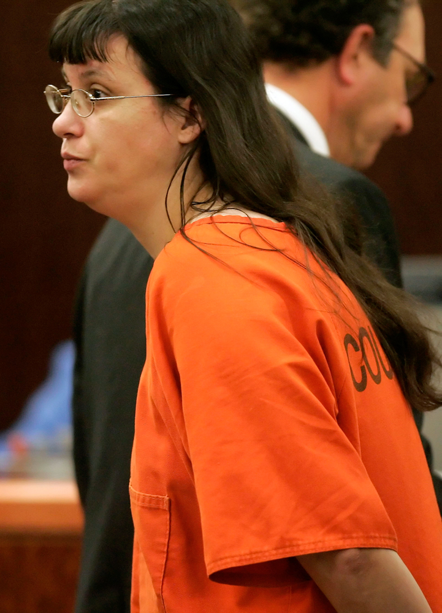

Case Details:
In 2001, Andrea Yates drowned her five young children in the bathtub of their Houston,Texas, home while suffering from severe postpartum psychosis and religious delusions. After her husband had left for work she had drowned the children one by one in the bathub then called 911 and later her husband. Her motive was that she believed by killing her children that it would save them from eternal damnation/hell.
Verdict:
Following a overturned initial conviction due to flawed expert testimony, her 2006 retrial resulted in a verdict of not guilty by reason of insanity. Although, some see this defense as a loophole she is still committed to the same state mental hospital since the 2006 retrial. This case again used the M'naghten rule to help prove that Andrea Yates was no in the right state of mind when drowning her children. Medical experts testified that she suffered from severe postpartum depression with psychotic features and schizophrenia.